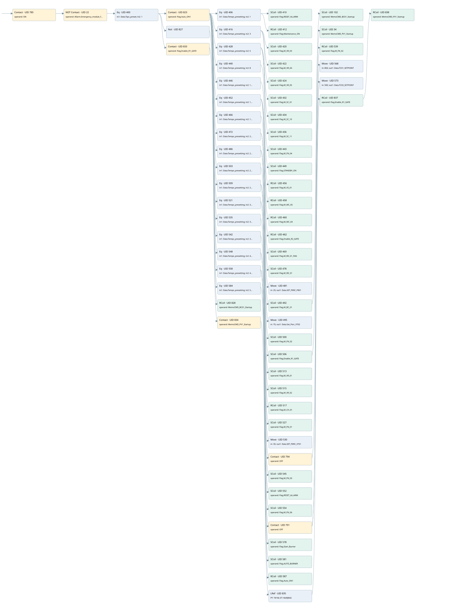

preheating
auto start motors · 검색 색인 순서 3 · 원본 내부 NID 추정 3
백업 PLF 원본의 2661004 바이트 위치에서 복원한 XML. 검색 문서 1843의 객체 키 16102200c310000000000000와 연결했다. 이름 해석 89/90개. 남은 RefId는 상수 또는 미해석 참조다.
연결 구조 다시 그리기
원본 Part/PCon/Wire를 이용한 연결도다. TIA 화면의 래더 배치 또는 실행 결과를 재현한 그림은 아니다. 핀 연결은 아래 표와 원본 XML을 기준으로 읽는다. 노드 위에 마우스를 두면 피연산자 이름을 볼 수 있다.

접점·코일·블록과 피연산자
| Part UID | Gate | Negated 핀 | 연결 피연산자 |
|---|---|---|---|
| 785 | Contact | operand = ON | |
| 22 | Contact | operand | operand = Allarm.Emergency_module_fault |
| 400 | Eq | in1 = Data.Tipo_preset; in2 = 1 | |
| 823 | Contact | operand = Flag.Auto_ON1 | |
| 406 | Eq | in1 = Data.Tempo_presetting; in2 = 1 | |
| 410 | SCoil | operand = Flag.RESET_ALLARM | |
| 412 | RCoil | operand = Flag.Maintenance_ON | |
| 416 | Eq | in1 = Data.Tempo_presetting; in2 = 3 | |
| 420 | SCoil | operand = Flag.M_VR_03 | |
| 422 | SCoil | operand = Flag.M_VR_04 | |
| 424 | SCoil | operand = Flag.M_VR_05 | |
| 428 | Eq | in1 = Data.Tempo_presetting; in2 = 5 | |
| 432 | SCoil | operand = Flag.M_SC_01 | |
| 434 | SCoil | operand = Flag.M_SC_10 | |
| 436 | SCoil | operand = Flag.M_SC_11 | |
| 440 | Eq | in1 = Data.Tempo_presetting; in2 = 8 | |
| 443 | SCoil | operand = Flag.M_FN_04 | |
| 446 | Eq | in1 = Data.Tempo_presetting; in2 = 15 | |
| 449 | SCoil | operand = Flag.STANDBY_ON | |
| 452 | Eq | in1 = Data.Tempo_presetting; in2 = 17 | |
| 456 | RCoil | operand = Flag.M_VS_01 | |
| 458 | RCoil | operand = Flag.M_MC_05 | |
| 460 | RCoil | operand = Flag.M_MC_04 | |
| 462 | RCoil | operand = Flag.Enable_R2_GATE | |
| 466 | Eq | in1 = Data.Tempo_presetting; in2 = 19 | |
| 469 | SCoil | operand = Flag.M_RD_01_FAN | |
| 472 | Eq | in1 = Data.Tempo_presetting; in2 = 21 | |
| 478 | SCoil | operand = Flag.M_RD_01 | |
| 481 | Move | in = 25; out1 = Data.SET_PERC_FR01 | |
| 486 | Eq | in1 = Data.Tempo_presetting; in2 = 24 | |
| 492 | SCoil | operand = Flag.M_BC_01 | |
| 102 | SCoil | operand = MemoCMD_BC01_Startup | |
| 495 | Move | in = 75; out1 = Data.Set_Perc_VT02 | |
| 500 | SCoil | operand = Flag.M_FN_02 | |
| 503 | Eq | in1 = Data.Tempo_presetting; in2 = 26 | |
| 506 | SCoil | operand = Flag.Enable_R1_GATE | |
| 34 | SCoil | operand = MemoCMD_PV1_Startup | |
| 509 | Eq | in1 = Data.Tempo_presetting; in2 = 28 | |
| 513 | SCoil | operand = Flag.M_VR_01 | |
| 515 | SCoil | operand = Flag.M_VR_02 | |
| 517 | RCoil | operand = Flag.M_CH_01 | |
| 521 | Eq | in1 = Data.Tempo_presetting; in2 = 30 | |
| 527 | SCoil | operand = Flag.M_FN_01 | |
| 530 | Move | in = 35; out1 = Data.SET_PERC_VT01 | |
| 535 | Eq | in1 = Data.Tempo_presetting; in2 = 33 | |
| 794 | Contact | operand = OFF | |
| 539 | RCoil | operand = Flag.M_FN_02 | |
| 542 | Eq | in1 = Data.Tempo_presetting; in2 = 36 | |
| 545 | SCoil | operand = Flag.M_FN_03 | |
| 548 | Eq | in1 = Data.Tempo_presetting; in2 = 40 | |
| 552 | SCoil | operand = Flag.RESET_ALLARM | |
| 554 | SCoil | operand = Flag.M_FN_06 | |
| 558 | Eq | in1 = Data.Tempo_presetting; in2 = 45 | |
| 791 | Contact | operand = OFF | |
| 568 | Move | in = 850; out1 = Data.TC01_SETPOINT | |
| 573 | Move | in = 500; out1 = Data.TC03_SETPOINT | |
| 578 | SCoil | operand = Flag.Start_Burner | |
| 581 | SCoil | operand = Flag.AUTO_BURNER | |
| 584 | Eq | in1 = Data.Tempo_presetting; in2 = 50 | |
| 587 | RCoil | operand = Flag.Auto_ON1 | |
| 827 | Not | ||
| 828 | RCoil | operand = MemoCMD_BC01_Startup | |
| 833 | Contact | operand = Flag.Enable_R1_GATE | |
| 834 | Contact | operand = MemoCMD_PV1_Startup | |
| 835 | LRef | 호출 참조: RefId 116; PT = T#1M; ET = RefId (RefId 없음) / ORef UID 842 | |
| 837 | RCoil | operand = Flag.Enable_R1_GATE | |
| 838 | RCoil | operand = MemoCMD_PV1_Startup |
접점 경로를 펼친 조건식
Contact·O/A·비교기의 원본 연결을 읽기 쉽게 펼친 보조 해석이다. POWER는 전원 레일 시작을 뜻한다. 호출 블록·에지·타이머의 내부 동작과 다중 쓰기 순서는 이 표로 실행 검증하지 않았다. 미해석 핀과 RefId는 원문 연결표에서 확인한다.
| UID | 동작 | 대상 | 원본 접점 경로 | 내용 |
|---|---|---|---|---|
| 410 | SCoil | Flag.RESET_ALLARM | ((((ON AND NOT [Allarm.Emergency_module_fault]) AND [Data.Tipo_preset = 1]) AND Flag.Auto_ON1) AND [Data.Tempo_presetting = 1]) | 조건 성립 시 Set |
| 412 | RCoil | Flag.Maintenance_ON | ((((ON AND NOT [Allarm.Emergency_module_fault]) AND [Data.Tipo_preset = 1]) AND Flag.Auto_ON1) AND [Data.Tempo_presetting = 1]) | 조건 성립 시 Reset |
| 420 | SCoil | Flag.M_VR_03 | ((((ON AND NOT [Allarm.Emergency_module_fault]) AND [Data.Tipo_preset = 1]) AND Flag.Auto_ON1) AND [Data.Tempo_presetting = 3]) | 조건 성립 시 Set |
| 422 | SCoil | Flag.M_VR_04 | ((((ON AND NOT [Allarm.Emergency_module_fault]) AND [Data.Tipo_preset = 1]) AND Flag.Auto_ON1) AND [Data.Tempo_presetting = 3]) | 조건 성립 시 Set |
| 424 | SCoil | Flag.M_VR_05 | ((((ON AND NOT [Allarm.Emergency_module_fault]) AND [Data.Tipo_preset = 1]) AND Flag.Auto_ON1) AND [Data.Tempo_presetting = 3]) | 조건 성립 시 Set |
| 432 | SCoil | Flag.M_SC_01 | ((((ON AND NOT [Allarm.Emergency_module_fault]) AND [Data.Tipo_preset = 1]) AND Flag.Auto_ON1) AND [Data.Tempo_presetting = 5]) | 조건 성립 시 Set |
| 434 | SCoil | Flag.M_SC_10 | ((((ON AND NOT [Allarm.Emergency_module_fault]) AND [Data.Tipo_preset = 1]) AND Flag.Auto_ON1) AND [Data.Tempo_presetting = 5]) | 조건 성립 시 Set |
| 436 | SCoil | Flag.M_SC_11 | ((((ON AND NOT [Allarm.Emergency_module_fault]) AND [Data.Tipo_preset = 1]) AND Flag.Auto_ON1) AND [Data.Tempo_presetting = 5]) | 조건 성립 시 Set |
| 443 | SCoil | Flag.M_FN_04 | ((((ON AND NOT [Allarm.Emergency_module_fault]) AND [Data.Tipo_preset = 1]) AND Flag.Auto_ON1) AND [Data.Tempo_presetting = 8]) | 조건 성립 시 Set |
| 449 | SCoil | Flag.STANDBY_ON | ((((ON AND NOT [Allarm.Emergency_module_fault]) AND [Data.Tipo_preset = 1]) AND Flag.Auto_ON1) AND [Data.Tempo_presetting = 15]) | 조건 성립 시 Set |
| 456 | RCoil | Flag.M_VS_01 | ((((ON AND NOT [Allarm.Emergency_module_fault]) AND [Data.Tipo_preset = 1]) AND Flag.Auto_ON1) AND [Data.Tempo_presetting = 17]) | 조건 성립 시 Reset |
| 458 | RCoil | Flag.M_MC_05 | ((((ON AND NOT [Allarm.Emergency_module_fault]) AND [Data.Tipo_preset = 1]) AND Flag.Auto_ON1) AND [Data.Tempo_presetting = 17]) | 조건 성립 시 Reset |
| 460 | RCoil | Flag.M_MC_04 | ((((ON AND NOT [Allarm.Emergency_module_fault]) AND [Data.Tipo_preset = 1]) AND Flag.Auto_ON1) AND [Data.Tempo_presetting = 17]) | 조건 성립 시 Reset |
| 462 | RCoil | Flag.Enable_R2_GATE | ((((ON AND NOT [Allarm.Emergency_module_fault]) AND [Data.Tipo_preset = 1]) AND Flag.Auto_ON1) AND [Data.Tempo_presetting = 17]) | 조건 성립 시 Reset |
| 469 | SCoil | Flag.M_RD_01_FAN | ((((ON AND NOT [Allarm.Emergency_module_fault]) AND [Data.Tipo_preset = 1]) AND Flag.Auto_ON1) AND [Data.Tempo_presetting = 19]) | 조건 성립 시 Set |
| 478 | SCoil | Flag.M_RD_01 | ((((ON AND NOT [Allarm.Emergency_module_fault]) AND [Data.Tipo_preset = 1]) AND Flag.Auto_ON1) AND [Data.Tempo_presetting = 21]) | 조건 성립 시 Set |
| 481 | Move | Data.SET_PERC_FR01 | ((((ON AND NOT [Allarm.Emergency_module_fault]) AND [Data.Tipo_preset = 1]) AND Flag.Auto_ON1) AND [Data.Tempo_presetting = 21]) | Move 입력 25 |
| 492 | SCoil | Flag.M_BC_01 | ((((ON AND NOT [Allarm.Emergency_module_fault]) AND [Data.Tipo_preset = 1]) AND Flag.Auto_ON1) AND [Data.Tempo_presetting = 24]) | 조건 성립 시 Set |
| 102 | SCoil | MemoCMD_BC01_Startup | SCoil UID 492.out (블록 동작 확인) | 조건 성립 시 Set |
| 495 | Move | Data.Set_Perc_VT02 | ((((ON AND NOT [Allarm.Emergency_module_fault]) AND [Data.Tipo_preset = 1]) AND Flag.Auto_ON1) AND [Data.Tempo_presetting = 24]) | Move 입력 75 |
| 500 | SCoil | Flag.M_FN_02 | ((((ON AND NOT [Allarm.Emergency_module_fault]) AND [Data.Tipo_preset = 1]) AND Flag.Auto_ON1) AND [Data.Tempo_presetting = 24]) | 조건 성립 시 Set |
| 506 | SCoil | Flag.Enable_R1_GATE | ((((ON AND NOT [Allarm.Emergency_module_fault]) AND [Data.Tipo_preset = 1]) AND Flag.Auto_ON1) AND [Data.Tempo_presetting = 26]) | 조건 성립 시 Set |
| 34 | SCoil | MemoCMD_PV1_Startup | SCoil UID 506.out (블록 동작 확인) | 조건 성립 시 Set |
| 513 | SCoil | Flag.M_VR_01 | ((((ON AND NOT [Allarm.Emergency_module_fault]) AND [Data.Tipo_preset = 1]) AND Flag.Auto_ON1) AND [Data.Tempo_presetting = 28]) | 조건 성립 시 Set |
| 515 | SCoil | Flag.M_VR_02 | ((((ON AND NOT [Allarm.Emergency_module_fault]) AND [Data.Tipo_preset = 1]) AND Flag.Auto_ON1) AND [Data.Tempo_presetting = 28]) | 조건 성립 시 Set |
| 517 | RCoil | Flag.M_CH_01 | ((((ON AND NOT [Allarm.Emergency_module_fault]) AND [Data.Tipo_preset = 1]) AND Flag.Auto_ON1) AND [Data.Tempo_presetting = 28]) | 조건 성립 시 Reset |
| 527 | SCoil | Flag.M_FN_01 | ((((ON AND NOT [Allarm.Emergency_module_fault]) AND [Data.Tipo_preset = 1]) AND Flag.Auto_ON1) AND [Data.Tempo_presetting = 30]) | 조건 성립 시 Set |
| 530 | Move | Data.SET_PERC_VT01 | ((((ON AND NOT [Allarm.Emergency_module_fault]) AND [Data.Tipo_preset = 1]) AND Flag.Auto_ON1) AND [Data.Tempo_presetting = 30]) | Move 입력 35 |
| 539 | RCoil | Flag.M_FN_02 | (((((ON AND NOT [Allarm.Emergency_module_fault]) AND [Data.Tipo_preset = 1]) AND Flag.Auto_ON1) AND [Data.Tempo_presetting = 33]) AND OFF) | 조건 성립 시 Reset |
| 545 | SCoil | Flag.M_FN_03 | ((((ON AND NOT [Allarm.Emergency_module_fault]) AND [Data.Tipo_preset = 1]) AND Flag.Auto_ON1) AND [Data.Tempo_presetting = 36]) | 조건 성립 시 Set |
| 552 | SCoil | Flag.RESET_ALLARM | ((((ON AND NOT [Allarm.Emergency_module_fault]) AND [Data.Tipo_preset = 1]) AND Flag.Auto_ON1) AND [Data.Tempo_presetting = 40]) | 조건 성립 시 Set |
| 554 | SCoil | Flag.M_FN_06 | ((((ON AND NOT [Allarm.Emergency_module_fault]) AND [Data.Tipo_preset = 1]) AND Flag.Auto_ON1) AND [Data.Tempo_presetting = 40]) | 조건 성립 시 Set |
| 568 | Move | Data.TC01_SETPOINT | (((((ON AND NOT [Allarm.Emergency_module_fault]) AND [Data.Tipo_preset = 1]) AND Flag.Auto_ON1) AND [Data.Tempo_presetting = 45]) AND OFF) | Move 입력 850 |
| 573 | Move | Data.TC03_SETPOINT | (((((ON AND NOT [Allarm.Emergency_module_fault]) AND [Data.Tipo_preset = 1]) AND Flag.Auto_ON1) AND [Data.Tempo_presetting = 45]) AND OFF) | Move 입력 500 |
| 578 | SCoil | Flag.Start_Burner | ((((ON AND NOT [Allarm.Emergency_module_fault]) AND [Data.Tipo_preset = 1]) AND Flag.Auto_ON1) AND [Data.Tempo_presetting = 45]) | 조건 성립 시 Set |
| 581 | SCoil | Flag.AUTO_BURNER | ((((ON AND NOT [Allarm.Emergency_module_fault]) AND [Data.Tipo_preset = 1]) AND Flag.Auto_ON1) AND [Data.Tempo_presetting = 45]) | 조건 성립 시 Set |
| 587 | RCoil | Flag.Auto_ON1 | ((((ON AND NOT [Allarm.Emergency_module_fault]) AND [Data.Tipo_preset = 1]) AND Flag.Auto_ON1) AND [Data.Tempo_presetting = 50]) | 조건 성립 시 Reset |
| 828 | RCoil | MemoCMD_BC01_Startup | NOT [((ON AND NOT [Allarm.Emergency_module_fault]) AND [Data.Tipo_preset = 1])] | 조건 성립 시 Reset |
| 837 | RCoil | Flag.Enable_R1_GATE | LRef UID 835.Q (블록 동작 확인) | 조건 성립 시 Reset |
| 838 | RCoil | MemoCMD_PV1_Startup | RCoil UID 837.out (블록 동작 확인) | 조건 성립 시 Reset |
원본 배선 연결
| Wire UID | 동일 Wire 연결 끝점 |
|---|---|
| 793 | Powerrail {} ↔ Part 785.in |
| 668 | ORef 588 (ON) ↔ Part 785.operand |
| 786 | Part 785.out ↔ Part 22.in |
| 21 | ORef 23 (Allarm.Emergency_module_fault) ↔ Part 22.operand |
| 32 | Part 22.out ↔ Part 400.pre |
| 670 | ORef 590 (Data.Tipo_preset) ↔ Part 400.in1 |
| 671 | ORef 591 (1) ↔ Part 400.in2 |
| 33 | Part 400.out ↔ Part 823.in ↔ Part 827.in ↔ Part 833.in |
| 826 | ORef 824 (Flag.Auto_ON1) ↔ Part 823.operand |
| 672 | Part 823.out ↔ Part 406.pre ↔ Part 416.pre ↔ Part 428.pre ↔ Part 440.pre ↔ Part 446.pre ↔ Part 452.pre ↔ Part 466.pre ↔ Part 472.pre ↔ Part 486.pre ↔ Part 503.pre ↔ Part 509.pre ↔ Part 521.pre ↔ Part 535.pre ↔ Part 542.pre ↔ Part 548.pre ↔ Part 558.pre ↔ Part 584.pre |
| 673 | ORef 592 (Data.Tempo_presetting) ↔ Part 406.in1 |
| 674 | ORef 593 (1) ↔ Part 406.in2 |
| 675 | Part 406.out ↔ Part 410.in ↔ Part 412.in |
| 676 | ORef 594 (Flag.RESET_ALLARM) ↔ Part 410.operand |
| 677 | ORef 595 (Flag.Maintenance_ON) ↔ Part 412.operand |
| 679 | ORef 596 (Data.Tempo_presetting) ↔ Part 416.in1 |
| 680 | ORef 597 (3) ↔ Part 416.in2 |
| 681 | Part 416.out ↔ Part 420.in ↔ Part 422.in ↔ Part 424.in |
| 682 | ORef 598 (Flag.M_VR_03) ↔ Part 420.operand |
| 683 | ORef 599 (Flag.M_VR_04) ↔ Part 422.operand |
| 684 | ORef 600 (Flag.M_VR_05) ↔ Part 424.operand |
| 686 | ORef 601 (Data.Tempo_presetting) ↔ Part 428.in1 |
| 687 | ORef 602 (5) ↔ Part 428.in2 |
| 688 | Part 428.out ↔ Part 432.in ↔ Part 434.in ↔ Part 436.in |
| 689 | ORef 603 (Flag.M_SC_01) ↔ Part 432.operand |
| 690 | ORef 604 (Flag.M_SC_10) ↔ Part 434.operand |
| 691 | ORef 605 (Flag.M_SC_11) ↔ Part 436.operand |
| 693 | ORef 606 (Data.Tempo_presetting) ↔ Part 440.in1 |
| 694 | ORef 607 (8) ↔ Part 440.in2 |
| 695 | Part 440.out ↔ Part 443.in |
| 697 | ORef 608 (Flag.M_FN_04) ↔ Part 443.operand |
| 698 | ORef 609 (Data.Tempo_presetting) ↔ Part 446.in1 |
| 699 | ORef 610 (15) ↔ Part 446.in2 |
| 700 | Part 446.out ↔ Part 449.in |
| 702 | ORef 611 (Flag.STANDBY_ON) ↔ Part 449.operand |
| 703 | ORef 612 (Data.Tempo_presetting) ↔ Part 452.in1 |
| 704 | ORef 613 (17) ↔ Part 452.in2 |
| 705 | Part 452.out ↔ Part 456.in ↔ Part 458.in ↔ Part 460.in ↔ Part 462.in |
| 706 | ORef 614 (Flag.M_VS_01) ↔ Part 456.operand |
| 707 | ORef 615 (Flag.M_MC_05) ↔ Part 458.operand |
| 708 | ORef 616 (Flag.M_MC_04) ↔ Part 460.operand |
| 709 | ORef 617 (Flag.Enable_R2_GATE) ↔ Part 462.operand |
| 711 | ORef 618 (Data.Tempo_presetting) ↔ Part 466.in1 |
| 712 | ORef 619 (19) ↔ Part 466.in2 |
| 713 | Part 466.out ↔ Part 469.in |
| 715 | ORef 620 (Flag.M_RD_01_FAN) ↔ Part 469.operand |
| 716 | ORef 621 (Data.Tempo_presetting) ↔ Part 472.in1 |
| 717 | ORef 622 (21) ↔ Part 472.in2 |
| 718 | Part 472.out ↔ Part 478.in ↔ Part 481.en |
| 719 | ORef 623 (Flag.M_RD_01) ↔ Part 478.operand |
| 720 | ORef 624 (25) ↔ Part 481.in |
| 721 | Part 481.out1 ↔ ORef 625 (Data.SET_PERC_FR01) |
| 723 | ORef 626 (Data.Tempo_presetting) ↔ Part 486.in1 |
| 724 | ORef 627 (24) ↔ Part 486.in2 |
| 725 | Part 486.out ↔ Part 492.in ↔ Part 495.en ↔ Part 500.in |
| 726 | ORef 628 (Flag.M_BC_01) ↔ Part 492.operand |
| 104 | Part 492.out ↔ Part 102.in |
| 105 | ORef 106 (MemoCMD_BC01_Startup) ↔ Part 102.operand |
| 727 | ORef 629 (75) ↔ Part 495.in |
| 728 | Part 495.out1 ↔ ORef 630 (Data.Set_Perc_VT02) |
| 729 | ORef 631 (Flag.M_FN_02) ↔ Part 500.operand |
| 731 | ORef 632 (Data.Tempo_presetting) ↔ Part 503.in1 |
| 732 | ORef 633 (26) ↔ Part 503.in2 |
| 27 | Part 503.out ↔ Part 506.in |
| 28 | ORef 29 (Flag.Enable_R1_GATE) ↔ Part 506.operand |
| 36 | Part 506.out ↔ Part 34.in |
| 37 | ORef 38 (MemoCMD_PV1_Startup) ↔ Part 34.operand |
| 736 | ORef 635 (Data.Tempo_presetting) ↔ Part 509.in1 |
| 737 | ORef 636 (28) ↔ Part 509.in2 |
| 738 | Part 509.out ↔ Part 513.in ↔ Part 515.in ↔ Part 517.in |
| 739 | ORef 637 (Flag.M_VR_01) ↔ Part 513.operand |
| 740 | ORef 638 (Flag.M_VR_02) ↔ Part 515.operand |
| 25 | ORef 26 (Flag.M_CH_01) ↔ Part 517.operand |
| 743 | ORef 640 (Data.Tempo_presetting) ↔ Part 521.in1 |
| 744 | ORef 641 (30) ↔ Part 521.in2 |
| 745 | Part 521.out ↔ Part 527.in ↔ Part 530.en |
| 746 | ORef 642 (Flag.M_FN_01) ↔ Part 527.operand |
| 747 | ORef 643 (35) ↔ Part 530.in |
| 748 | Part 530.out1 ↔ ORef 644 (Data.SET_PERC_VT01) |
| 750 | ORef 645 (Data.Tempo_presetting) ↔ Part 535.in1 |
| 751 | ORef 646 (33) ↔ Part 535.in2 |
| 30 | Part 535.out ↔ Part 794.in |
| 797 | ORef 795 (OFF) ↔ Part 794.operand |
| 31 | Part 794.out ↔ Part 539.in |
| 755 | ORef 648 (Flag.M_FN_02) ↔ Part 539.operand |
| 756 | ORef 649 (Data.Tempo_presetting) ↔ Part 542.in1 |
| 757 | ORef 650 (36) ↔ Part 542.in2 |
| 758 | Part 542.out ↔ Part 545.in |
| 760 | ORef 651 (Flag.M_FN_03) ↔ Part 545.operand |
| 761 | ORef 652 (Data.Tempo_presetting) ↔ Part 548.in1 |
| 762 | ORef 653 (40) ↔ Part 548.in2 |
| 763 | Part 548.out ↔ Part 552.in ↔ Part 554.in |
| 764 | ORef 654 (Flag.RESET_ALLARM) ↔ Part 552.operand |
| 765 | ORef 655 (Flag.M_FN_06) ↔ Part 554.operand |
| 767 | ORef 656 (Data.Tempo_presetting) ↔ Part 558.in1 |
| 768 | ORef 657 (45) ↔ Part 558.in2 |
| 769 | Part 558.out ↔ Part 791.in ↔ Part 578.in ↔ Part 581.in |
| 770 | ORef 658 (OFF) ↔ Part 791.operand |
| 792 | Part 791.out ↔ Part 568.en ↔ Part 573.en |
| 771 | ORef 659 (850) ↔ Part 568.in |
| 772 | Part 568.out1 ↔ ORef 660 (Data.TC01_SETPOINT) |
| 773 | ORef 661 (500) ↔ Part 573.in |
| 774 | Part 573.out1 ↔ ORef 662 (Data.TC03_SETPOINT) |
| 776 | ORef 663 (Flag.Start_Burner) ↔ Part 578.operand |
| 777 | ORef 664 (Flag.AUTO_BURNER) ↔ Part 581.operand |
| 779 | ORef 665 (Data.Tempo_presetting) ↔ Part 584.in1 |
| 780 | ORef 666 (50) ↔ Part 584.in2 |
| 781 | Part 584.out ↔ Part 587.in |
| 783 | ORef 667 (Flag.Auto_ON1) ↔ Part 587.operand |
| 831 | Part 827.out ↔ Part 828.in |
| 832 | ORef 829 (MemoCMD_BC01_Startup) ↔ Part 828.operand |
| 846 | ORef 839 (Flag.Enable_R1_GATE) ↔ Part 833.operand |
| 847 | Part 833.out ↔ Part 834.in |
| 848 | ORef 840 (MemoCMD_PV1_Startup) ↔ Part 834.operand |
| 849 | Part 834.out ↔ Part 835.IN |
| 850 | ORef 841 (T#1M) ↔ Part 835.PT |
| 851 | Part 835.Q ↔ Part 837.in |
| 852 | Part 835.ET ↔ ORef 842 (RefId (RefId 없음)) |
| 853 | ORef 843 (Flag.Enable_R1_GATE) ↔ Part 837.operand |
| 854 | Part 837.out ↔ Part 838.in |
| 855 | ORef 844 (MemoCMD_PV1_Startup) ↔ Part 838.operand |
식별자 해석 근거 90개
| ORef UID | RefId | 이름 | IdentXmlPart 파일 | 해석 방법 |
|---|---|---|---|---|
| 588 | 1 | ON | 0575-IdentXmlPart.xml | UID/RID + search-text + NID agreement |
| 23 | 108 | Allarm.Emergency_module_fault | 0577-IdentXmlPart.xml | UID/RID + search-text + NID agreement |
| 590 | 12 | Data.Tipo_preset | 0577-IdentXmlPart.xml | UID/RID + search-text + NID agreement |
| 591 | 8 | 1 | 0578-IdentXmlPart.xml | literal candidate: UID/RID/NID + nearby named declarations + search-text agreement |
| 824 | 4 | Flag.Auto_ON1 | 0577-IdentXmlPart.xml | UID/RID + search-text + NID agreement |
| 592 | 7 | Data.Tempo_presetting | 0577-IdentXmlPart.xml | UID/RID + search-text + NID agreement |
| 593 | 8 | 1 | 0578-IdentXmlPart.xml | literal candidate: UID/RID/NID + nearby named declarations + search-text agreement |
| 594 | 16 | Flag.RESET_ALLARM | 0577-IdentXmlPart.xml | UID/RID + search-text + NID agreement |
| 595 | 17 | Flag.Maintenance_ON | 0577-IdentXmlPart.xml | UID/RID + search-text + NID agreement |
| 596 | 7 | Data.Tempo_presetting | 0577-IdentXmlPart.xml | UID/RID + search-text + NID agreement |
| 597 | 18 | 3 | 0578-IdentXmlPart.xml | literal candidate: UID/RID/NID + nearby named declarations + search-text agreement |
| 598 | 19 | Flag.M_VR_03 | 0577-IdentXmlPart.xml | UID/RID + search-text + NID agreement |
| 599 | 20 | Flag.M_VR_04 | 0577-IdentXmlPart.xml | UID/RID + search-text + NID agreement |
| 600 | 21 | Flag.M_VR_05 | 0577-IdentXmlPart.xml | UID/RID + search-text + NID agreement |
| 601 | 7 | Data.Tempo_presetting | 0577-IdentXmlPart.xml | UID/RID + search-text + NID agreement |
| 602 | 22 | 5 | 0578-IdentXmlPart.xml | literal candidate: UID/RID/NID + nearby named declarations + search-text agreement |
| 603 | 23 | Flag.M_SC_01 | 0577-IdentXmlPart.xml | UID/RID + search-text + NID agreement |
| 604 | 24 | Flag.M_SC_10 | 0577-IdentXmlPart.xml | UID/RID + search-text + NID agreement |
| 605 | 25 | Flag.M_SC_11 | 0577-IdentXmlPart.xml | UID/RID + search-text + NID agreement |
| 606 | 7 | Data.Tempo_presetting | 0577-IdentXmlPart.xml | UID/RID + search-text + NID agreement |
| 607 | 26 | 8 | 0578-IdentXmlPart.xml | literal candidate: UID/RID/NID + nearby named declarations + search-text agreement |
| 608 | 27 | Flag.M_FN_04 | 0577-IdentXmlPart.xml | UID/RID + search-text + NID agreement |
| 609 | 7 | Data.Tempo_presetting | 0577-IdentXmlPart.xml | UID/RID + search-text + NID agreement |
| 610 | 28 | 15 | 0578-IdentXmlPart.xml | literal candidate: UID/RID/NID + nearby named declarations + search-text agreement |
| 611 | 29 | Flag.STANDBY_ON | 0577-IdentXmlPart.xml | UID/RID + search-text + NID agreement |
| 612 | 7 | Data.Tempo_presetting | 0577-IdentXmlPart.xml | UID/RID + search-text + NID agreement |
| 613 | 30 | 17 | 0578-IdentXmlPart.xml | literal candidate: UID/RID/NID + nearby named declarations + search-text agreement |
| 614 | 31 | Flag.M_VS_01 | 0577-IdentXmlPart.xml | UID/RID + search-text + NID agreement |
| 615 | 32 | Flag.M_MC_05 | 0577-IdentXmlPart.xml | UID/RID + search-text + NID agreement |
| 616 | 33 | Flag.M_MC_04 | 0577-IdentXmlPart.xml | UID/RID + search-text + NID agreement |
| 617 | 34 | Flag.Enable_R2_GATE | 0577-IdentXmlPart.xml | UID/RID + search-text + NID agreement |
| 618 | 7 | Data.Tempo_presetting | 0577-IdentXmlPart.xml | UID/RID + search-text + NID agreement |
| 619 | 35 | 19 | 0578-IdentXmlPart.xml | literal candidate: UID/RID/NID + nearby named declarations + search-text agreement |
| 620 | 36 | Flag.M_RD_01_FAN | 0577-IdentXmlPart.xml | UID/RID + search-text + NID agreement |
| 621 | 7 | Data.Tempo_presetting | 0577-IdentXmlPart.xml | UID/RID + search-text + NID agreement |
| 622 | 37 | 21 | 0578-IdentXmlPart.xml | literal candidate: UID/RID/NID + nearby named declarations + search-text agreement |
| 623 | 40 | Flag.M_RD_01 | 0577-IdentXmlPart.xml | UID/RID + search-text + NID agreement |
| 624 | 42 | 25 | 0578-IdentXmlPart.xml | literal candidate: UID/RID/NID + nearby named declarations + search-text agreement |
| 625 | 43 | Data.SET_PERC_FR01 | 0577-IdentXmlPart.xml | UID/RID + search-text + NID agreement |
| 626 | 7 | Data.Tempo_presetting | 0577-IdentXmlPart.xml | UID/RID + search-text + NID agreement |
| 627 | 44 | 24 | 0578-IdentXmlPart.xml | literal candidate: UID/RID/NID + nearby named declarations + search-text agreement |
| 628 | 45 | Flag.M_BC_01 | 0577-IdentXmlPart.xml | UID/RID + search-text + NID agreement |
| 106 | 115 | MemoCMD_BC01_Startup | 0575-IdentXmlPart.xml | UID/RID + search-text + NID agreement |
| 629 | 47 | 75 | 0578-IdentXmlPart.xml | literal candidate: UID/RID/NID + nearby named declarations + search-text agreement |
| 630 | 48 | Data.Set_Perc_VT02 | 0577-IdentXmlPart.xml | UID/RID + search-text + NID agreement |
| 631 | 49 | Flag.M_FN_02 | 0577-IdentXmlPart.xml | UID/RID + search-text + NID agreement |
| 632 | 7 | Data.Tempo_presetting | 0577-IdentXmlPart.xml | UID/RID + search-text + NID agreement |
| 633 | 50 | 26 | 0578-IdentXmlPart.xml | literal candidate: UID/RID/NID + nearby named declarations + search-text agreement |
| 29 | 51 | Flag.Enable_R1_GATE | 0577-IdentXmlPart.xml | UID/RID + search-text + NID agreement |
| 38 | 110 | MemoCMD_PV1_Startup | 0575-IdentXmlPart.xml | UID/RID + search-text + NID agreement |
| 635 | 7 | Data.Tempo_presetting | 0577-IdentXmlPart.xml | UID/RID + search-text + NID agreement |
| 636 | 52 | 28 | 0578-IdentXmlPart.xml | literal candidate: UID/RID/NID + nearby named declarations + search-text agreement |
| 637 | 53 | Flag.M_VR_01 | 0577-IdentXmlPart.xml | UID/RID + search-text + NID agreement |
| 638 | 54 | Flag.M_VR_02 | 0577-IdentXmlPart.xml | UID/RID + search-text + NID agreement |
| 26 | 55 | Flag.M_CH_01 | 0577-IdentXmlPart.xml | UID/RID + search-text + NID agreement |
| 640 | 7 | Data.Tempo_presetting | 0577-IdentXmlPart.xml | UID/RID + search-text + NID agreement |
| 641 | 56 | 30 | 0578-IdentXmlPart.xml | literal candidate: UID/RID/NID + nearby named declarations + search-text agreement |
| 642 | 57 | Flag.M_FN_01 | 0577-IdentXmlPart.xml | UID/RID + search-text + NID agreement |
| 643 | 59 | 35 | 0578-IdentXmlPart.xml | literal candidate: UID/RID/NID + nearby named declarations + search-text agreement |
| 644 | 60 | Data.SET_PERC_VT01 | 0577-IdentXmlPart.xml | UID/RID + search-text + NID agreement |
| 645 | 7 | Data.Tempo_presetting | 0577-IdentXmlPart.xml | UID/RID + search-text + NID agreement |
| 646 | 61 | 33 | 0578-IdentXmlPart.xml | literal candidate: UID/RID/NID + nearby named declarations + search-text agreement |
| 795 | 62 | OFF | 0575-IdentXmlPart.xml | UID/RID + search-text + NID agreement |
| 648 | 49 | Flag.M_FN_02 | 0577-IdentXmlPart.xml | UID/RID + search-text + NID agreement |
| 649 | 7 | Data.Tempo_presetting | 0577-IdentXmlPart.xml | UID/RID + search-text + NID agreement |
| 650 | 63 | 36 | 0578-IdentXmlPart.xml | literal candidate: UID/RID/NID + nearby named declarations + search-text agreement |
| 651 | 64 | Flag.M_FN_03 | 0577-IdentXmlPart.xml | UID/RID + search-text + NID agreement |
| 652 | 7 | Data.Tempo_presetting | 0577-IdentXmlPart.xml | UID/RID + search-text + NID agreement |
| 653 | 65 | 40 | 0578-IdentXmlPart.xml | literal candidate: UID/RID/NID + nearby named declarations + search-text agreement |
| 654 | 16 | Flag.RESET_ALLARM | 0577-IdentXmlPart.xml | UID/RID + search-text + NID agreement |
| 655 | 66 | Flag.M_FN_06 | 0577-IdentXmlPart.xml | UID/RID + search-text + NID agreement |
| 656 | 7 | Data.Tempo_presetting | 0577-IdentXmlPart.xml | UID/RID + search-text + NID agreement |
| 657 | 67 | 45 | 0578-IdentXmlPart.xml | literal candidate: UID/RID/NID + nearby named declarations + search-text agreement |
| 658 | 62 | OFF | 0575-IdentXmlPart.xml | UID/RID + search-text + NID agreement |
| 659 | 70 | 850 | 0578-IdentXmlPart.xml | literal candidate: UID/RID/NID + nearby named declarations + search-text agreement |
| 660 | 71 | Data.TC01_SETPOINT | 0577-IdentXmlPart.xml | UID/RID + search-text + NID agreement |
| 661 | 73 | 500 | 0578-IdentXmlPart.xml | literal candidate: UID/RID/NID + nearby named declarations + search-text agreement |
| 662 | 74 | Data.TC03_SETPOINT | 0577-IdentXmlPart.xml | UID/RID + search-text + NID agreement |
| 663 | 75 | Flag.Start_Burner | 0577-IdentXmlPart.xml | UID/RID + search-text + NID agreement |
| 664 | 76 | Flag.AUTO_BURNER | 0577-IdentXmlPart.xml | UID/RID + search-text + NID agreement |
| 665 | 7 | Data.Tempo_presetting | 0577-IdentXmlPart.xml | UID/RID + search-text + NID agreement |
| 666 | 77 | 50 | 0578-IdentXmlPart.xml | literal candidate: UID/RID/NID + nearby named declarations + search-text agreement |
| 667 | 4 | Flag.Auto_ON1 | 0577-IdentXmlPart.xml | UID/RID + search-text + NID agreement |
| 829 | 115 | MemoCMD_BC01_Startup | 0575-IdentXmlPart.xml | UID/RID + search-text + NID agreement |
| 839 | 51 | Flag.Enable_R1_GATE | 0577-IdentXmlPart.xml | UID/RID + search-text + NID agreement |
| 840 | 110 | MemoCMD_PV1_Startup | 0575-IdentXmlPart.xml | UID/RID + search-text + NID agreement |
| 841 | 118 | T#1M | 0578-IdentXmlPart.xml | literal candidate: UID/RID/NID + nearby named declarations + search-text agreement |
| 842 | (RefId 없음) | 미해석 RefId | 식별 선언 원본 참조 | 미해석 |
| 843 | 51 | Flag.Enable_R1_GATE | 0577-IdentXmlPart.xml | UID/RID + search-text + NID agreement |
| 844 | 110 | MemoCMD_PV1_Startup | 0575-IdentXmlPart.xml | UID/RID + search-text + NID agreement |
검색 코드 보조 자료
참조 명칭을 찾기 위한 자료이며 실행 순서나 AND/OR 관계는 위 연결표로 확인한다.
"on" "allarm".emergency_module_fault "data".tipo_preset 1 "flag".auto_on1 "data".tempo_presetting 1 "flag".reset_allarm "memocmd_bc01_startup" "flag".enable_r1_gate "memocmd_pv1_startup" ton "t_reset_startup_pv1" t#1m "flag".enable_r1_gate "memocmd_pv1_startup" "data".tempo_presetting 3 "flag".m_vr_03 "flag".m_vr_04 "flag".m_vr_05 "data".tempo_presetting 5 "flag".m_sc_01 "flag".m_sc_10 "flag".m_sc_11 "data".tempo_presetting 8 "flag".m_fn_04 "data".tempo_presetting 15 "flag".standby_on "data".tempo_presetting 17 "flag".m_vs_01 "flag".m_mc_05 "flag".m_mc_04 "flag".enable_r2_gate "data".tempo_presetting 19 "flag".m_rd_01_fan "data".tempo_presetting 21 "flag".m_rd_01 move 25 "data".set_perc_fr01 "data".tempo_presetting 24 "flag".m_bc_01 "memocmd_bc01_startup" move 75 "data".set_perc_vt02 "flag".m_fn_02 "data".tempo_presetting 26 "flag".enable_r1_gate "memocmd_pv1_startup" "data".tempo_presetting 28 "flag".m_vr_01 "flag".m_vr_02 "flag".m_ch_01 "data".tempo_presetting 30 "flag".m_fn_01 move 35 "data".set_perc_vt01 "data".tempo_presetting 33 "off" "flag".m_fn_02 "data".tempo_presetting 36 "flag".m_fn_03 "data".tempo_presetting 40 "flag".reset_allarm "flag".m_fn_06 "data".tempo_presetting 45 "off" move 850 "flag".start_burner "flag".auto_burner move 500 "data".tc03_setpoint "data".tc01_setpoint "data".tempo_presetting 50 "flag".auto_on1 "flag".maintenance_on